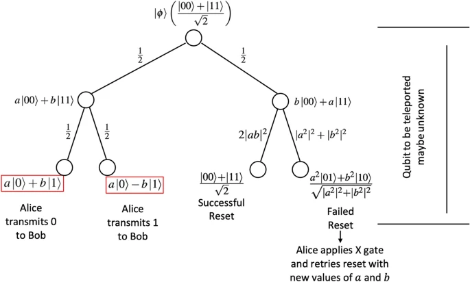

دائرة التنقل (teleportation)
Quantum teleportation(الانتقال الأني الكمي) في الحقيقة الانتقال الاني الكمي لا ينقل البتات الكمية ولكنه ينقل حالتها او قيمتها الى البت الاخر. يحصل ذلك عن طريق ربط الكيوبت الأول في كيو بت اخر وإجراء عملية فحص مزدوجة عليهما (Combined measurement) كما اسماها بيل : إذا كانا الكيوبتان A, B متشابكان كميا وقمنا بربط A مع كيو بت ثالث واسميناه C ثم أجرينا عملية فحص مزدوجة على A, C فستنتقل قيمة C إلى B عن طريق A لكن، اذا كان الكيوبتان C,A بعيدان جدا عن A كيف يمكننا إرسال رسالة بان عملية النقل تمت وما هي طريقة القياس ؟ يمكن فعل ذلك عن طريق قناة نقل كلاسيكية (ألياف ضوئية مثلا) تنقل 2 بت كلاسيكي فقط كما في الشكل التالي :

برمجياً
ويمكن تطبيق دائرة النقل برمجيا عبر هذا المخطط :
OPENQASM 2.0
include "qelib1.inc";
gate nG0 ( param ) q {
h q;
}
qreg q[3];
creg c[3];
ry(pi/4) q[0];
barrier q[0],q[1],q[2];
h q[1];
cx q[1],q[2];
barrier q[0],q[1],q[2];
cx q[0],q[1];
h q[0];
barrier q[0],q[1],q[2];
cx q[1],q[2];
measure q[2] -> c[2];
measure q[1] -> c[1];
measure q[0] -> c[0];